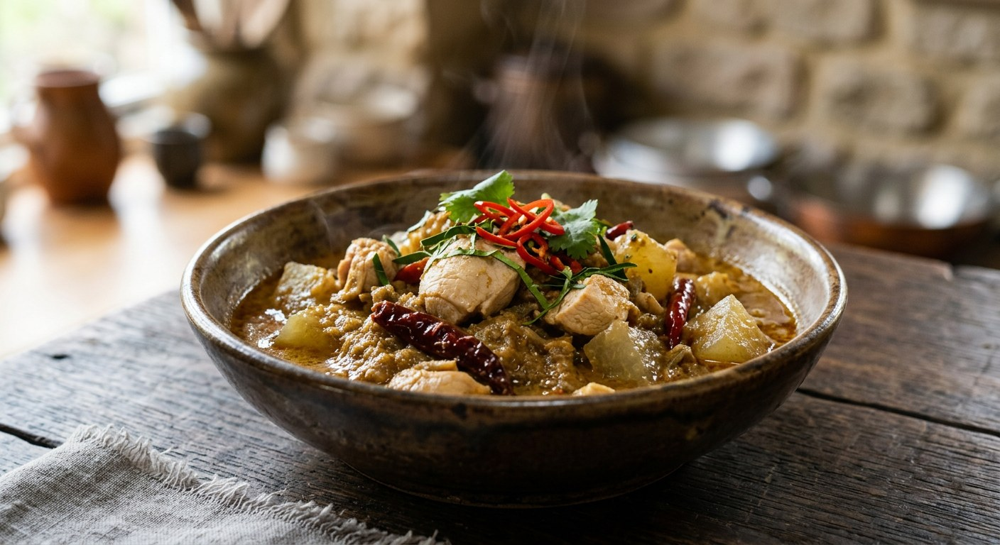

Chicken fried in a spice-free curry paste with coconut cream until the oil splits, then simmered with winter melon until the curry turns thick and clingy — or, two hundred kilometres south, the same name made dry and coconut-free.

แกงคั่ว takes its name from the verb คั่ว — to dry-roast, to stir-fry without water — and Kapook's definition of the curry reads like a technique sheet: a home-style curry built on a paste with no dry spices, fried in oil or simmered with coconut cream until the oil splits (แตกมัน), vegetables as the main ingredient with the meat playing support, and a finished liquid that is red-orange, a little split oil floating on top, never too thick and never too thin.
The name, though, does not travel well. In the south it is the dry one: Pantip and Wongnai's home cooks fry ready-made southern curry paste in oil, add the chicken, and reduce until the liquid clings — no coconut at all. In Nan in the far north, TrueID's version is a different curry entirely — no coconut, seasoned with pla ra and the numbing northern spice ma kwaen, finished with a bunch of cumin leaves. The version here is the central Thai one: coconut cream, fried paste, chicken and winter melon.
Three details matter. The oil split is the done-ness test — when the cream separates into oil and solids, the paste is cooked. The tamarind is the third flavour, the sour note that lifts the sweet-salty base. And the winter melon is the classic pairing — Ajinomoto's central-style recipe simmers ฟักอ่อน with the chicken, the melon turning translucent as it drinks the curry.
| Thai | English | Amount |
|---|---|---|
| พริกชี้ฟ้าแห้ง (แกะเมล็ด แช่น้ำ) | Dried spur chillies, deseeded, soaked | 5 |
| พริกขี้หนูแห้ง (แช่น้ำ) | Dried bird chillies, soaked | 5 |
| หอมแดง (หั่นหยาบ) | Shallots, chopped | 50 g |
| กระเทียมไทย | Garlic | 20 g |
| ข่าซอย | Galangal, sliced | 1 tsp |
| กะปิ | Shrimp paste | 2 tsp |
| น้ำมันพืช | Vegetable oil | 2 tbsp |
| หัวกะทิ | Coconut cream | ½ cup |
| สะโพกไก่ | Chicken thighs | 600 g |
| ฟักอ่อน | Young winter melon | 200 g |
| กะทิ | Coconut milk | 250 g |
| น้ำปลา | Fish sauce | 3 tbsp |
| น้ำตาลปี๊บ | Palm sugar | 1½ tbsp |
| น้ำมะขามเปียก | Tamarind water | 2–3 tbsp |
| ใบมะกรูดฉีก | Kaffir lime leaves, torn | 5 leaves |
| พริกชี้ฟ้าแดง (หั่นเฉียง) | Red spur chillies, sliced | 2 |
| โหระพา | Thai sweet basil | 10 g |
The southern dry version (Pantip): 6 tbsp ready-made southern curry paste, 2 tbsp oil, 2 chicken thighs, 1½ cups water, 3 tbsp fish sauce, 3 tsp palm sugar, 10 kaffir lime leaves, 2 red spur chillies — no coconut, simmered until thick. Wongnai's southern pot adds 8–9 tsp sugar and a full hour's simmer. The northern Nan version (TrueID): 500 g chicken, 15 dried chillies, lemongrass, shallots, garlic, galangal, 1 tbsp ma kwaen, 10 kaffir lime leaves, 2 tbsp pla ra, 1 tbsp oil — no coconut, finished with a bunch of cumin leaves and holy basil, and never covered.
Coconut or not. The southern versions (Pantip, Wongnai) use none — paste fried in oil, water added, reduced dry. The central versions (Kapook, Ajinomoto) are coconut-cream curries. TrueID's northern Nan version also skips coconut but leans on pla ra instead. One name, three curries.
The paste. Pantip and Wongnai start from ready-made southern curry paste (6 tbsp, or "20 baht worth"). The central sources pound their own — but disagree on what goes in: Kapook's classic paste is just chillies, shallots, garlic, galangal and shrimp paste, while Ajinomoto's adds lemongrass, fingerroot, kaffir lime zest and two sizes of dried chilli. TrueID's northern paste swaps the shrimp paste for ma kwaen.
The winter melon. Only Ajinomoto pairs the chicken with ฟักอ่อน — the classic central marriage. Kapook's other แกงคั่ว recipes pair the same paste with pineapple, mussels or mushrooms instead; the southern pots use no vegetable at all.
The sour note. Kapook's central version seasons with tamarind water for the full sour-sweet-salty triangle. The southern versions (Pantip, Wongnai) season with only fish sauce and sugar — two flavours, not three.
The simmer. Wongnai simmers chopped chicken for a full hour in its water-based pot; Pantip just reduces until thick; Ajinomoto's is a quick boil — coconut milk added at the end, done in minutes once the chicken is cooked.
Salt and MSG. Wongnai seasons with salt, seasoning powder and fish sauce; Ajinomoto uses MSG and fish sauce; TrueID uses only salt plus the pla ra. The home pots reach for whatever is in the cupboard.
The herbs. TrueID finishes with cumin leaves and holy basil — the northern signature, and warns never to cover the pot or the herbs yellow. Ajinomoto uses sweet basil. The central and southern pots finish with kaffir lime leaves and red spur chillies.
This recipe is translated from the following Thai-language sources. Where they disagree, we've said so.
1. Kapook — "8 เมนูแกงคั่ว สูตรแกงไทยเผ็ดร้อน" (the paste recipe and frying technique used here) — cooking.kapook.com
2. Ajinomoto TH — "วิธีทำและสูตรแกงคั่วไก่หอมเครื่องแกง" (the chicken and winter melon proportions) — recipe.ajinomoto.co.th
3. Pantip — "แกงคั่วไก่ พริกแกงใต้ อาหารใต้ อาหารไทย by ครัวหรรษา" (the southern dry version) — pantip.com
4. Wongnai — "สูตร 'แกงคั่วไก่' พร้อมวิธีทำโดย ImAiw Wattanakorn" (the hour-long southern pot) — wongnai.com
5. TrueID Food — "แกงคั่วไก่ ใส่ใบจั๋นจ้อ สูตรเมืองน่าน" (the northern Nan version) — food.trueid.net